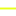

<!doctype html>
<html lang="en">
    <head>
        <meta charset="utf-8">
        <meta http-equiv="X-UA-Compatible" content="IE=edge">
        <meta name="viewport" content="initial-scale=1,user-scalable=no,maximum-scale=1,width=device-width">
        <meta name="mobile-web-app-capable" content="yes">
        <meta name="apple-mobile-web-app-capable" content="yes">
        <link rel="stylesheet" href="css/leaflet.css"><link rel="stylesheet" href="css/L.Control.Locate.min.css">
        <link rel="stylesheet" href="css/qgis2web.css"><link rel="stylesheet" href="css/fontawesome-all.min.css">
        <link rel="stylesheet" href="css/MarkerCluster.css">
        <link rel="stylesheet" href="css/MarkerCluster.Default.css">
        <style>
        #map {
            width: 1024px;
            height: 843px;
        }
        </style>
        <title></title>
    </head>
    <body>
        <div id="map">
        </div>
        <script src="js/qgis2web_expressions.js"></script>
        <script src="js/leaflet.js"></script><script src="js/L.Control.Locate.min.js"></script>
        <script src="js/multi-style-layer.js"></script>
        <script src="js/leaflet-svg-shape-markers.min.js"></script>
        <script src="js/leaflet.rotatedMarker.js"></script>
        <script src="js/leaflet.pattern.js"></script>
        <script src="js/leaflet-hash.js"></script>
        <script src="js/Autolinker.min.js"></script>
        <script src="js/rbush.min.js"></script>
        <script src="js/labelgun.min.js"></script>
        <script src="js/labels.js"></script>
        <script src="js/leaflet.markercluster.js"></script>
        <script src="data/NANUMAGA_1mCONT_TGZ_1.js"></script>
        <script src="data/SitePhotos_2.js"></script>
        <script src="data/BTBalignment_DD_3.js"></script>
        <script>
        var highlightLayer;
        function highlightFeature(e) {
            highlightLayer = e.target;

            if (e.target.feature.geometry.type === 'LineString') {
              highlightLayer.setStyle({
                color: '#ffff00',
              });
            } else {
              highlightLayer.setStyle({
                fillColor: '#ffff00',
                fillOpacity: 1
              });
            }
        }
        var map = L.map('map', {
            zoomControl:true, maxZoom:28, minZoom:1
        }).fitBounds([[-6.290218016248904,176.31268809554106],[-6.28783976985348,176.31557496995694]]);
        var hash = new L.Hash(map);
        map.attributionControl.setPrefix('<a href="https://github.com/tomchadwin/qgis2web" target="_blank">qgis2web</a> &middot; <a href="https://leafletjs.com" title="A JS library for interactive maps">Leaflet</a> &middot; <a href="https://qgis.org">QGIS</a>');
        var autolinker = new Autolinker({truncate: {length: 30, location: 'smart'}});
        L.control.locate({locateOptions: {maxZoom: 19}}).addTo(map);
        var bounds_group = new L.featureGroup([]);
        function setBounds() {
        }
        map.createPane('pane_NGA_reduced_0');
        map.getPane('pane_NGA_reduced_0').style.zIndex = 400;
        var img_NGA_reduced_0 = 'data/NGA_reduced_0.png';
        var img_bounds_NGA_reduced_0 = [[-6.306371225470192,176.31080692510088],[-6.266713184562838,176.32993290354673]];
        var layer_NGA_reduced_0 = new L.imageOverlay(img_NGA_reduced_0,
                                              img_bounds_NGA_reduced_0,
                                              {pane: 'pane_NGA_reduced_0'});
        bounds_group.addLayer(layer_NGA_reduced_0);
        map.addLayer(layer_NGA_reduced_0);
        function pop_NANUMAGA_1mCONT_TGZ_1(feature, layer) {
            layer.on({
                mouseout: function(e) {
                    for (i in e.target._eventParents) {
                        e.target._eventParents[i].resetStyle(e.target);
                    }
                },
                mouseover: highlightFeature,
            });
            var popupContent = '<table>\
                    <tr>\
                        <td colspan="2">' + (feature.properties['ID'] !== null ? autolinker.link(feature.properties['ID'].toLocaleString()) : '') + '</td>\
                    </tr>\
                    <tr>\
                        <th scope="row">ELEV</th>\
                        <td>' + (feature.properties['ELEV'] !== null ? autolinker.link(feature.properties['ELEV'].toLocaleString()) : '') + '</td>\
                    </tr>\
                </table>';
            layer.bindPopup(popupContent, {maxHeight: 400});
        }

        function style_NANUMAGA_1mCONT_TGZ_1_0() {
            return {
                pane: 'pane_NANUMAGA_1mCONT_TGZ_1',
                opacity: 1,
                color: 'rgba(0,0,0,1.0)',
                dashArray: '',
                lineCap: 'square',
                lineJoin: 'bevel',
                weight: 1.0,
                fillOpacity: 0,
                interactive: true,
            }
        }
        map.createPane('pane_NANUMAGA_1mCONT_TGZ_1');
        map.getPane('pane_NANUMAGA_1mCONT_TGZ_1').style.zIndex = 401;
        map.getPane('pane_NANUMAGA_1mCONT_TGZ_1').style['mix-blend-mode'] = 'normal';
        var layer_NANUMAGA_1mCONT_TGZ_1 = new L.geoJson(json_NANUMAGA_1mCONT_TGZ_1, {
            attribution: '',
            interactive: true,
            dataVar: 'json_NANUMAGA_1mCONT_TGZ_1',
            layerName: 'layer_NANUMAGA_1mCONT_TGZ_1',
            pane: 'pane_NANUMAGA_1mCONT_TGZ_1',
            onEachFeature: pop_NANUMAGA_1mCONT_TGZ_1,
            style: style_NANUMAGA_1mCONT_TGZ_1_0,
        });
        bounds_group.addLayer(layer_NANUMAGA_1mCONT_TGZ_1);
        map.addLayer(layer_NANUMAGA_1mCONT_TGZ_1);
        function pop_SitePhotos_2(feature, layer) {
            layer.on({
                mouseout: function(e) {
                    for (i in e.target._eventParents) {
                        e.target._eventParents[i].resetStyle(e.target);
                    }
                },
                mouseover: highlightFeature,
            });
            var popupContent = '<table>\
                    <tr>\
                        <td colspan="2">' + (feature.properties['id'] !== null ? autolinker.link(feature.properties['id'].toLocaleString()) : '') + '</td>\
                    </tr>\
                    <tr>\
                        <th scope="row">Comments</th>\
                        <td>' + (feature.properties['Comments'] !== null ? autolinker.link(feature.properties['Comments'].toLocaleString()) : '') + '</td>\
                    </tr>\
                    <tr>\
                        <td colspan="2"><strong>photo1</strong><br />' + (feature.properties['photo1'] !== null ? '' : '') + '</td>\
                    </tr>\
                    <tr>\
                        <td colspan="2"><strong>photo2</strong><br />' + (feature.properties['photo2'] !== null ? '' : '') + '</td>\
                    </tr>\
                    <tr>\
                        <td colspan="2"><strong>photo3</strong><br />' + (feature.properties['photo3'] !== null ? '' : '') + '</td>\
                    </tr>\
                </table>';
            layer.bindPopup(popupContent, {maxHeight: 400});
        }

        function style_SitePhotos_2_0() {
            return {
                pane: 'pane_SitePhotos_2',
                radius: 6.0,
                opacity: 1,
                color: 'rgba(250,7,44,1.0)',
                dashArray: '',
                lineCap: 'butt',
                lineJoin: 'miter',
                weight: 4.0,
                fill: true,
                fillOpacity: 1,
                fillColor: 'rgba(255,255,255,1.0)',
                interactive: true,
            }
        }
        function style_SitePhotos_2_1() {
            return {
                pane: 'pane_SitePhotos_2',
                radius: 1.5,
                opacity: 1,
                color: 'rgba(250,176,124,1.0)',
                dashArray: '',
                lineCap: 'butt',
                lineJoin: 'miter',
                weight: 1.0,
                fill: true,
                fillOpacity: 1,
                fillColor: 'rgba(250,59,62,1.0)',
                interactive: true,
            }
        }
        map.createPane('pane_SitePhotos_2');
        map.getPane('pane_SitePhotos_2').style.zIndex = 402;
        map.getPane('pane_SitePhotos_2').style['mix-blend-mode'] = 'normal';
        var layer_SitePhotos_2 = new L.geoJson.multiStyle(json_SitePhotos_2, {
            attribution: '',
            interactive: true,
            dataVar: 'json_SitePhotos_2',
            layerName: 'layer_SitePhotos_2',
            pane: 'pane_SitePhotos_2',
            onEachFeature: pop_SitePhotos_2,
            pointToLayers: [function (feature, latlng) {
                var context = {
                    feature: feature,
                    variables: {}
                };
                return L.shapeMarker(latlng, style_SitePhotos_2_0(feature));
            },function (feature, latlng) {
                var context = {
                    feature: feature,
                    variables: {}
                };
                return L.shapeMarker(latlng, style_SitePhotos_2_1(feature));
            },
        ]});
        var cluster_SitePhotos_2 = new L.MarkerClusterGroup({showCoverageOnHover: false,
            spiderfyDistanceMultiplier: 2});
        cluster_SitePhotos_2.addLayer(layer_SitePhotos_2);

        bounds_group.addLayer(layer_SitePhotos_2);
        cluster_SitePhotos_2.addTo(map);
        function pop_BTBalignment_DD_3(feature, layer) {
            layer.on({
                mouseout: function(e) {
                    for (i in e.target._eventParents) {
                        e.target._eventParents[i].resetStyle(e.target);
                    }
                },
                mouseover: highlightFeature,
            });
            var popupContent = '<table>\
                    <tr>\
                        <td colspan="2"><strong>id</strong><br />' + (feature.properties['id'] !== null ? autolinker.link(feature.properties['id'].toLocaleString()) : '') + '</td>\
                    </tr>\
                </table>';
            layer.bindPopup(popupContent, {maxHeight: 400});
        }

        function style_BTBalignment_DD_3_0() {
            return {
                pane: 'pane_BTBalignment_DD_3',
                opacity: 1,
                color: 'rgba(232,255,23,1.0)',
                dashArray: '',
                lineCap: 'square',
                lineJoin: 'bevel',
                weight: 2.0,
                fillOpacity: 0,
                interactive: true,
            }
        }
        map.createPane('pane_BTBalignment_DD_3');
        map.getPane('pane_BTBalignment_DD_3').style.zIndex = 403;
        map.getPane('pane_BTBalignment_DD_3').style['mix-blend-mode'] = 'normal';
        var layer_BTBalignment_DD_3 = new L.geoJson(json_BTBalignment_DD_3, {
            attribution: '',
            interactive: true,
            dataVar: 'json_BTBalignment_DD_3',
            layerName: 'layer_BTBalignment_DD_3',
            pane: 'pane_BTBalignment_DD_3',
            onEachFeature: pop_BTBalignment_DD_3,
            style: style_BTBalignment_DD_3_0,
        });
        bounds_group.addLayer(layer_BTBalignment_DD_3);
        map.addLayer(layer_BTBalignment_DD_3);
        var baseMaps = {};
        L.control.layers(baseMaps,{' BTBalignment_DD': layer_BTBalignment_DD_3,' SitePhotos': cluster_SitePhotos_2,' NANUMAGA_1mCONT_TGZ': layer_NANUMAGA_1mCONT_TGZ_1,"NGA_reduced": layer_NGA_reduced_0,},{collapsed:false}).addTo(map);
        setBounds();
        var i = 0;
        layer_NANUMAGA_1mCONT_TGZ_1.eachLayer(function(layer) {
            var context = {
                feature: layer.feature,
                variables: {}
            };
            layer.bindTooltip((layer.feature.properties['ELEV'] !== null?String('<div style="color: #000000; font-size: 10pt; font-family: \'MS Shell Dlg 2\', sans-serif;">' + layer.feature.properties['ELEV']) + '</div>':''), {permanent: true, offset: [-0, -16], className: 'css_NANUMAGA_1mCONT_TGZ_1'});
            labels.push(layer);
            totalMarkers += 1;
              layer.added = true;
              addLabel(layer, i);
              i++;
        });
        L.ImageOverlay.include({
            getBounds: function () {
                return this._bounds;
            }
        });
        resetLabels([layer_NANUMAGA_1mCONT_TGZ_1]);
        map.on("zoomend", function(){
            resetLabels([layer_NANUMAGA_1mCONT_TGZ_1]);
        });
        map.on("layeradd", function(){
            resetLabels([layer_NANUMAGA_1mCONT_TGZ_1]);
        });
        map.on("layerremove", function(){
            resetLabels([layer_NANUMAGA_1mCONT_TGZ_1]);
        });
        </script>
    </body>
</html>
